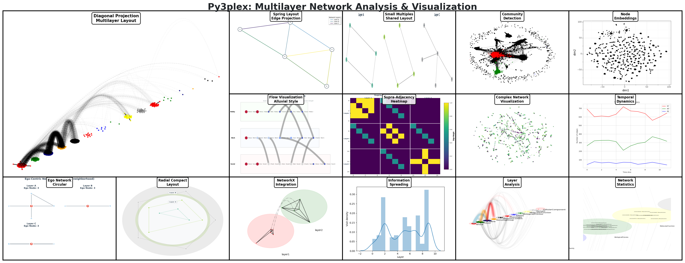

Py3plex: Multilayer Network Analysis

py3plex provides scalable analysis and visualization of multilayer and multiplex networks in Python.
Key features at a glance:
Multiplex and multilayer network structures
SQL-like DSL for network queries — first-class feature
17+ multilayer statistics and centrality measures
Community detection (Louvain, Infomap, multilayer modularity)
Random walk algorithms (Node2Vec, DeepWalk) for embeddings
Publication-ready visualizations
High-performance I/O with Arrow/Parquet support
Full NetworkX compatibility
DSL: Query Networks Like SQL
The py3plex DSL lets you query networks using intuitive SQL-like syntax or a type-safe Python builder API. Both return the same results; pick the style that fits your workflow.
from py3plex.dsl import execute_query, Q, L
# String DSL: Simple and readable
result = execute_query(network,
'SELECT nodes WHERE layer="social" AND degree > 5 '
'COMPUTE betweenness_centrality'
)
# Builder API: Type-safe with autocompletion
result = (
Q.nodes()
.from_layers(L["social"])
.where(degree__gt=5)
.compute("betweenness_centrality")
.order_by("-betweenness_centrality")
.limit(10)
.execute(network)
)
The DSL is perfect for:
Interactive network exploration
Rapid prototyping
Educational purposes
Production pipelines
See the complete SQL-like DSL for Multilayer Networks guide for all features!
Quickstart
Get started in three steps: install, build a tiny multilayer network, and inspect it.
Step 1 — Install
pip install py3plex
Step 2 — Create a multilayer network
from py3plex.core import multinet
network = multinet.multi_layer_network()
network.add_edges([
['Alice', 'friends', 'Bob', 'friends', 1],
['Bob', 'friends', 'Carol', 'friends', 1],
['Alice', 'colleagues', 'Bob', 'colleagues', 1],
], input_type="list")
network.basic_stats()
network.visualize_network(show=True)
Expected output
Number of nodes: 6
Number of edges: 3
Counts reflect per-layer node identities (Alice/Bob/Carol each appear in two layers). Your totals will differ if you change the edge list. The visualization opens in a Matplotlib window and colors nodes by layer.
Start Here
New to py3plex? Start with Quick Start Tutorial to move from basics to a full analysis in about 10 minutes.
Already familiar with multilayer networks? Jump to How to Run Community Detection on Multilayer Networks or browse How-to Guides for task-focused guides.
Just need the API? See API Documentation or DSL Reference.
Want to understand the concepts? Read Multilayer Networks 101 for the theory behind multilayer networks.
Documentation Structure
This documentation follows the Diátaxis framework with 7 top-level sections. Use the outline below to jump directly to the content type you need—tutorials for learning, how-to guides for tasks, explanations for concepts, and reference for precise details.
Part I: Overview
High-level introduction to py3plex and multilayer networks.
Part II: Getting Started (Tutorials)
Step-by-step tutorials for beginners. Start here if you’re new to py3plex.
Part III: How-to Guides
Task-oriented guides answering “How do I…?” questions.
How-to Guides
- How-to Guides
- How to Load and Build Networks
- Query Zoo: DSL Gallery for Multilayer Analysis
- Overview
- 1. Basic Multilayer Exploration
- 2. Cross-Layer Hubs
- 3. Layer Similarity
- 4. Community Structure
- 5. Multiplex PageRank
- 6. Robustness Analysis
- 7. Advanced Centrality Comparison
- 8. Edge Grouping and Coverage
- 9. Layer Algebra Filtering
- 10. Cross-Layer Paths with Algebra
- 11. Null Model Comparison
- 12. Bootstrap Confidence Intervals
- 13. Uncertainty-Aware Ranking
- Using the Query Zoo
- Further Reading
- How to Compute Network Statistics
- How to Run Community Detection on Multilayer Networks
- Quick Start: Louvain Algorithm
- Multilayer-Specific: Multilayer Louvain
- Infomap Algorithm
- Label Propagation
- Analyzing Community Structure
- Query Communities with DSL
- Compare Algorithms
- Layer-Specific Communities
- Cross-Layer Community Analysis
- Quality Metrics
- CLI Cross-Reference (Optional)
- Next Steps
- Automatic Algorithm Selection (AutoCommunity)
- Hierarchical Flow-Based Community Detection
- How to Simulate Multilayer Dynamics
- Overview
- Common Concepts & API
- SIR Epidemic Model on Multilayer Networks
- SIS Epidemic Model on Multilayer Networks
- Random Walk Dynamics
- Layer-Specific and Time-Varying Parameters
- Result Objects and Metrics
- Reproducible Experiments & Parameter Sweeps
- Custom Dynamics
- Query Dynamics Results with DSL
- Next Steps
- How to Run Random Walk Algorithms
- How to Export and Serialize Networks
- How to Visualize Multilayer Networks
- How to Query Multilayer Graphs with the SQL-like DSL
- How to Find Graph Patterns and Motifs with the Pattern Matching API
- Why Pattern Matching?
- Quick Start: Your First Pattern
- Pattern Components
- Multilayer-Aware Patterns
- Practical Examples
- Working with Results
- Query Execution Planning
- Performance Tips
- Advanced Features
- Comparison with Other Approaches
- Limitations and Future Work
- Troubleshooting
- Related Documentation
- Next Steps
- How to Build Analysis Pipelines with Dplyr-style Operations
- How to Reproduce Common Analysis Workflows
Part IV: Concepts & Explanations
Theoretical background and architectural explanations.
Concepts & Explanations
- Concepts & Explanations
- Multilayer Networks 101
- The py3plex Core Model
- Network Types: Multilayer vs Multiplex
- The
multi_layer_networkClass - Internal Representation
- Supra-Adjacency Matrix
- How py3plex Uses NetworkX Under the Hood
- Design Trade-offs
- Network Construction
- Network Operations
- Integration with NetworkX
- Performance Considerations
- Design Principles
- Comparison with Other Representations
- What You Learned
- What’s Next?
- Design Principles
- Algorithm Landscape
Part V: API & DSL Reference
Complete reference documentation for APIs and DSL syntax.
API & DSL Reference
- API & DSL Reference
- Algorithm Roadmap
- Algorithm Categories
- Community Detection Algorithms
- Centrality Measures
- Network Statistics
- Node Ranking & Classification
- Random Walks & Embeddings
- Visualization Algorithms
- Benchmark & Utilities
- Algorithm Selection Guide
- Algorithm Dependencies
- Common Algorithm Workflows
- Further Reading
- Citation Information
- DSL Reference
- Layer Set Algebra
- Uncertainty-First Statistics
- API Documentation
- Core Modules
- Configuration and Utilities
- Domain-Specific Language (DSL)
- Uncertainty Quantification
- Algorithms
- Visualization
- Wrappers
- I/O Operations
- Aggregation and Network Operations
- Profiling Utilities
- Logging Configuration
- I/O Schema and Validation
- Hedwig Rule Learning
- Force Atlas 2 Visualization
- Embedding Visualization
- Network Generation and Benchmarking
- Additional Statistics and Analysis
- Community Detection Advanced
- Node Ranking and Classification
- Embeddings and Wrappers
- Network Motifs and Patterns
- HINMINE Data Structures
- Command-Line Interface
- Validation Utilities
- Network Comparison and Testing
- Hedwig Learning Algorithms
- Hedwig Statistics and Scoring
- Hedwig Core Components
- Time Series and Temporal Analysis
- Advanced Visualization
- Link Prediction
- Configuration & Environment
Part VI: Examples, Recipes & Embeddings
Complete working examples, analysis recipes, and embedding workflows.
Examples, Recipes & Embeddings
- Examples & Recipes
- Random Walk Algorithms
- Analysis Recipes & Workflows
- Use Cases & Case Studies
- Why Case Studies Matter
- Lessons from the Field
- Case Study 1: Biological Network Analysis
- Case Study 2: Multi-Platform Social Network Analysis
- Case Study 3: Multi-Modal Transportation Analysis
- Case Study 4: Heterogeneous Academic Network
- Adapting Case Studies to Your Domain
- Conclusion: Patterns Across Domains
- Further Reading
Part VII: Project Info
Project information, contributing guidelines, and citations.
Additional Sections
Deployment & GUI
Developer Docs
Citation
If you use py3plex in your research, please cite:
@Article{Skrlj2019,
author={Skrlj, Blaz and Kralj, Jan and Lavrac, Nada},
title={Py3plex toolkit for visualization and analysis of multilayer networks},
journal={Applied Network Science},
year={2019},
volume={4},
number={1},
pages={94},
doi={10.1007/s41109-019-0203-7}
}